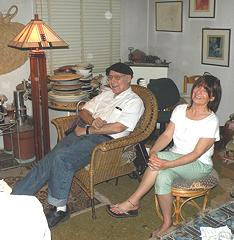
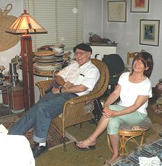

Alex & Edie
We met thanks to some matchmaking by Bonnie Callahan. Thank you Bonnie! I am so glad he remained friends with old girlfriends. He would call and we would have long 2-hour conversations that were wide ranging on many topics. I soon realized that he was checking me out to see if I was on his level.
The day came when he let me into his apartment. Before he opened the door, he said, "Try not to say 'Oh My God!' too many times". Big clue. Being the compulsive cleaner that I am, I soon began to make progress, filling up the dumpsters as I worked. We both had trust issues but decided to give it another chance and we were glad we did.
We had fun going to the L.A. County Fair. Having a flat tire and getting lost in the dark on the way home was not fun! "Which way is the freeway?" became a running joke between us.
He was generous and was always ready to help others. When he put the details of our first date into his smart phone, I knew it was official.Try as I might, I could not get into science fiction, which was a disappointment for him. I'm grateful for the time we had together, and he will always be in my heart.
In Loving Memory, Edie Emery
Bob Griffin
I cannot contribute any additional ingredients to the cake. I can only say how much I enjoyed my friendship with Alex, which for the most part was only experienced at the gatherings of the Donovanians: Science-Fiction & Fantasy & Classical-Music Lovers. I did visit him twice at the care home in Azusa, but that's it.
I will miss Alex for the rest of my journey here, and will rejoice in the friendship we had.
Bob Griffin
Photo Gallery
Click on picture for Larger View & Captions (bottom of pictures)
 
